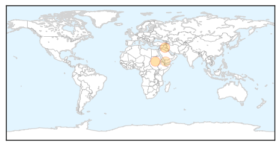
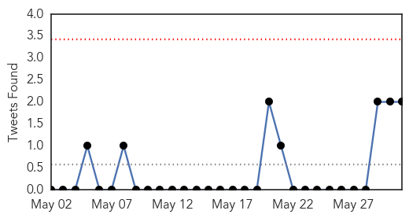
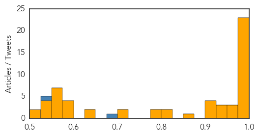

Measles
30-Day Web Trend
0 alerts, 0 warnings

30-Day Twitter Trend
0 alerts, 0 warnings

Article Locations
Article Confidences

Top Articles:
Top Tweets:
-
No tweets found for May 31, 2015
Unknown
30-Day Web Trend
0 alerts, 0 warnings

30-Day Twitter Trend
0 alerts, 0 warnings

Article Locations

Article Confidences
Top Articles:
- 0.998
- Number of MERS-infected South Koreans rises to 15
- 0.998
- Number of MERS-infected South Koreans rises to 15
- 0.998
- Number of MERS-infected South Koreans rises to 15
- 0.998
- Gov’t responds to new MERS cases-INSIDE Korea JoongAng Daily
- 0.998
- (LEAD) Gov't to launch task force against MERS
- 0.998
- (8th LD) S. Korea traveler in China diagnosed with MERS
- 0.997
- 2 refuse quarantine out of 47 who had close contact with China's first MERS patient, Others news, Health News, AsiaOne YourHealth
- 0.997
- Gov't to launch task force against MERS
- 0.997
- The World On Arirang
- 0.997
- (2nd LD) S. Korea reports additional MERS case, total rises to 13
- 0.996
- South Korea traveler in China diagnosed with MERS
- 0.993
- MERS cases rise to 15; soldier quarantined
- 0.993
- HK quarantines 18 close contacts of MERS patient
- 0.989
- 18 people quarantined in HK over MERS infection- China.org.cn
- 0.986
- Number of contacts with China's first MERS patient rises to 47
- 0.986
- KBS World Radio
- 0.986
- MERS in China: 47 citizens in quarantine
- 0.985
- News Analysis: MERS fears spread from S.Korea to China on carelessness, insufficient gov't response - Xinhua
- 0.983
- MERS-infected South Koreans rise to 15, no tertiary infection reported
- 0.983
- MERS-infected South Koreans rise to 15, no tertiary infection reported - Xinhua
- 0.983
- MERS-infected South Koreans rise to 15, no tertiary infection reported --China Economic Net
- 0.982
- Al Ain Mers patients released from hospital
- 0.981
- Two People Refuse to Go into MERS Quarantine
- 0.968
- Health chief in S. Korea apologises over MERS outbreak
- 0.960
- News Analysis: MERS fears spread from S.Korea to China on carelessness, insufficient gov't response
- 0.959
- S. Korean patient with MERS in stable condition in China
- 0.947
- (LEAD) Chinese authorities on alert after S. Korean man confirmed with MERS
- 0.942
- KBS World Radio
- 0.931
- 2 refuse to go into quarantine as 47 having contacts with China's first MERS patient[1]- Chinadaily.com.cn
- 0.917
- Chicago Tribune
- 0.912
- Number of Contacts with 1st MERS Patient in China Rises to 61
- 0.910
- First MERS case confirmed, dozens quarantined in China
- 0.903
- Number of MERS-infected South Koreans rises to 15
- 0.865
- Number of MERS-infected South Koreans rises to 15 - Xinhua
- 0.818
- Hong Kong quarantines 18 fellow passengers of S. Korean man infected with MERS
- 0.811
- What to learn from the recent salmonella outbreak in Canada
- 0.799
- Chronic wasting disease confirmed for the first time in Michigan’s free-ranging deer population
- 0.790
- Treating H.I.V. Patients Before They Get Sick
- 0.708
- Malawi Nyasa Times – Malawi breaking news in Malawi
- 0.703
- States enlist prisoners, plan biosecurity to combat avian flu threat
- 0.645
- The Post
- 0.632
- Moose Virus Targets Home Routers
- 0.600
- Kenya : Give free drugs to contain malaria, says Senator Bonny Khalwale
- 0.600
- Kenya : Give free drugs to contain malaria, says Senator Bonny Khalwale
- 0.588
- U.S. defense secretary reacts to anthrax scare-INSIDE Korea JoongAng Daily
- 0.579
- Doctors handing out antibiotics on demand - Nation
- 0.563
- Italy votes in local elections test for PM Renzi
- 0.563
- IS group destroys notorious Syria prison as regime accused of barrel bomb killings
- 0.563
- EU hits out at ‘totally arbitrary’ Russia travel blacklist
- 0.563
- Senate at impasse as US surveillance statutes set to expire
Showing top 50 articles...
Top Tweets:
- 0.686
- RT: World South Korean Health Minister Apologizes Over MERS Outbreak: South Korea's health minister apologised today… http:/…
- 0.658
- No question: KSA has a MERS cluster in Hufof. 4 cases reported there yday. 3 deaths, from prev cases, 1 in Hufof. http://t.co/ORo9q0eE0K
- 0.535
- Need to get virus sample sequenced from index and other cases to follow spread. Likely poor infection control?
- 0.503
- RT: Así de guapo es el turaco de Knysna, ave que puedes ver en Sudáfrica, Mozambique y Suazilandia. Foto: Desiré Darling ht…